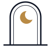
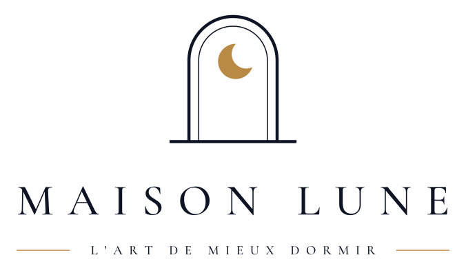
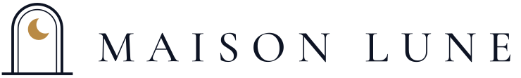
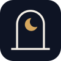
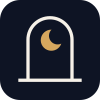

Le logo Maison Lune
Une arche, comme une alcôve, une porte de maison ou une tête de lit. La lune s’y pose, dorée. En dessous, le nom en capitales espacées, dessiné dans la même famille que les titres du site, et la signature « L’art de mieux dormir ».

Le double trait de l’arche rappelle les menuiseries et les moulures d’un intérieur soigné. La ligne d’horizon qui la déborde évoque le lit, posé au sol. Le croissant est le seul élément doré : c’est la signature, à ne jamais changer de couleur.
Logo principal (vertical)


Logo horizontal (site, e-mails, factures)


Icône (favicon, réseaux sociaux, étiquettes)


Couleurs
Bleu nuit#0E1424
Crème#F6F1E8
Or lune#D6A75E · fonds sombres
Or foncé#B98A45 · fonds clairs
Typographie
- DM Serif Display : titres éditoriaux.
- Manrope : textes, boutons et informations pratiques.
Règles d’usage
- Laisser autour du logo un espace libre au moins égal à la largeur de l’arche.
- Version horizontale sous 140 px de large : utiliser l’icône seule.
- Ne pas déformer, incliner, ombrer ni recolorer le logo ; le croissant reste toujours or.
- Fichiers vectoriels (
.svg) pour le site, l’impression et Canva ;png/pour les réseaux sociaux.